Estudio creativo · República Dominicana
Las ideas conectan. La creatividad transforma.
Somos un estudio creativo que convierte ideas en experiencias visuales, marcas memorables y contenido que conecta.
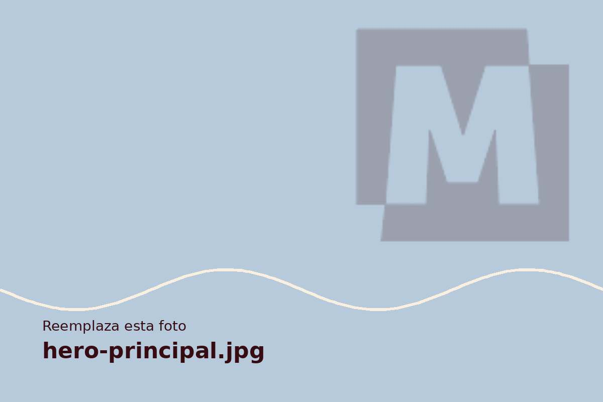
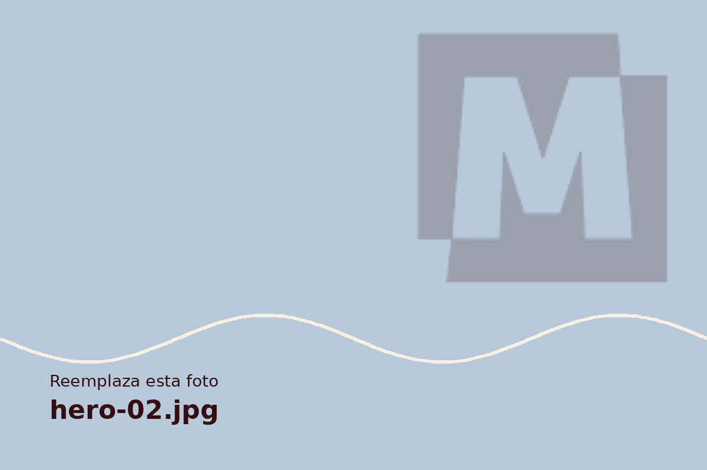
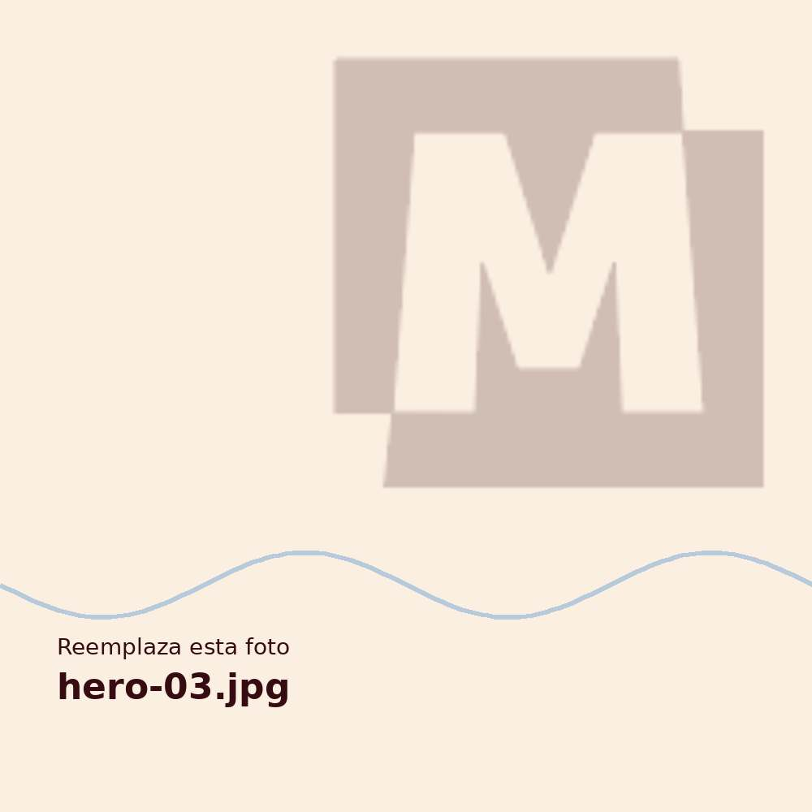

Nuestra mirada
El trabajo, girando
Gira la rueda, arrástrala o toca una foto para traerla al frente. Toca la foto central para verla grande.
Servicios
Todo lo que tu marca necesita
Seis áreas creativas, un solo equipo. Elige un servicio para ver qué incluye, sus paquetes y precios en RD$.
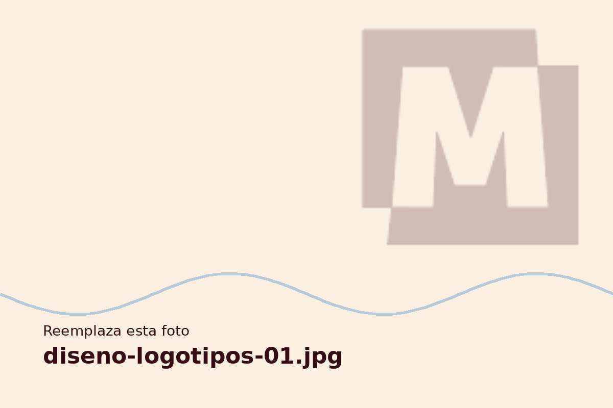
Diseño de logotipos
Un símbolo claro que representa lo que haces.
Conocer servicio →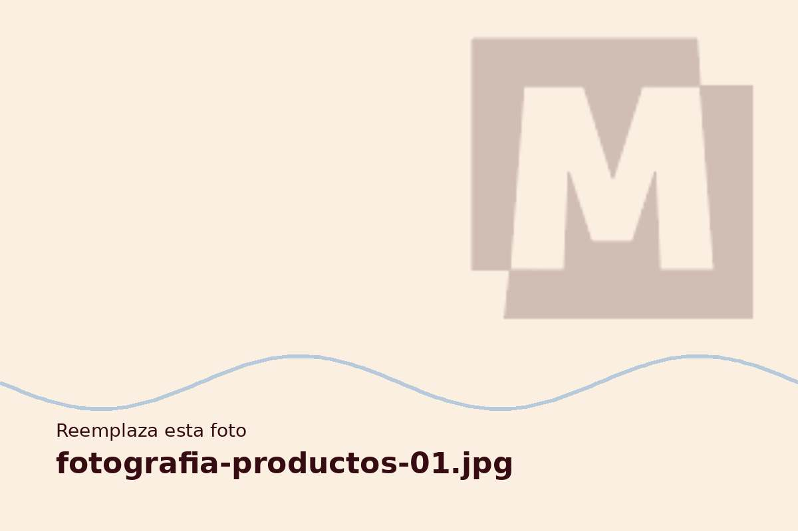
Fotografía de productos
Tu producto, con la luz que merece.
Conocer servicio →
Fotografía de retratos
Retratos naturales con personalidad.
Conocer servicio →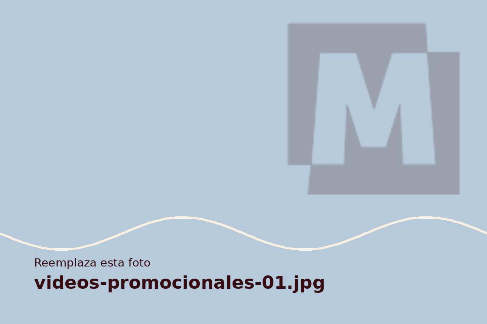
Grabación de videos promocionales
Un video corto que muestra lo mejor de tu negocio.
Conocer servicio →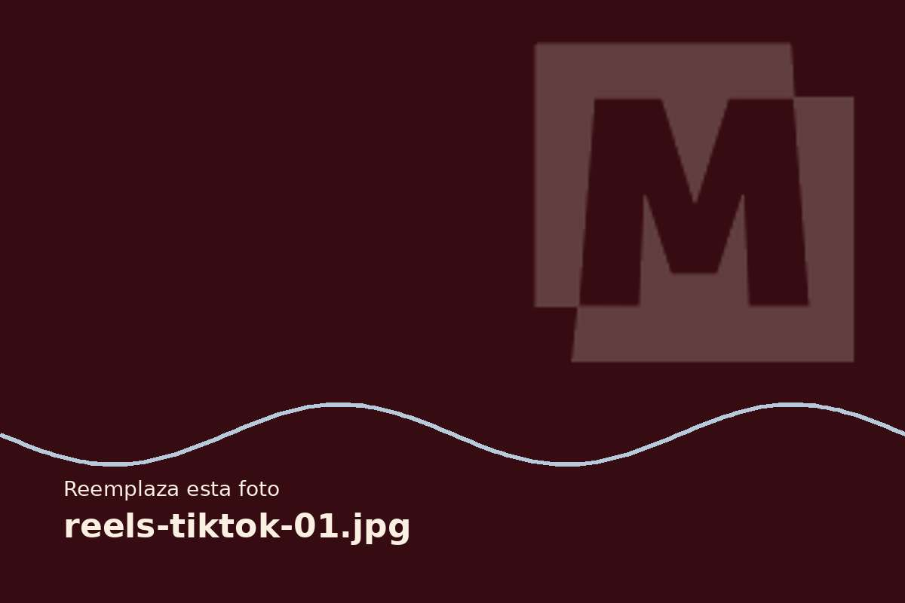
Reels y TikToks
Videos verticales con ritmo y tendencia.
Conocer servicio →Gestión de redes sociales
Tu marca activa y consistente, sin que te ocupes.
Conocer servicio →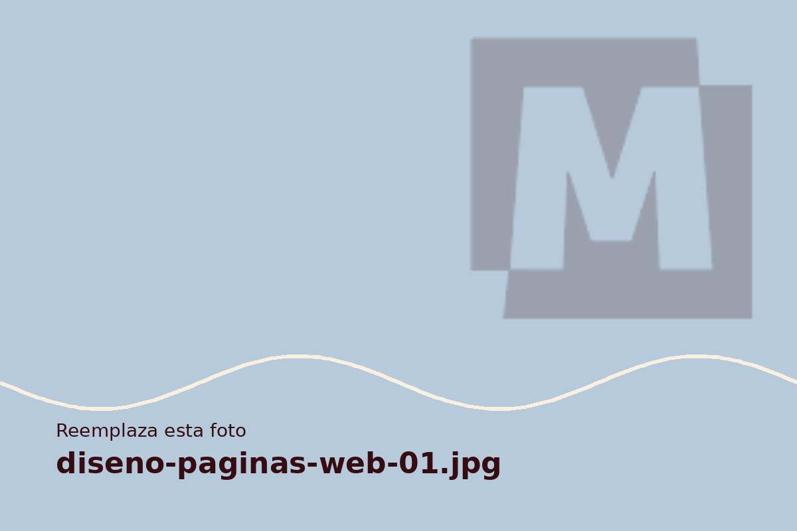
Diseño de páginas web
Un sitio a medida para tu marca.
Conocer servicio →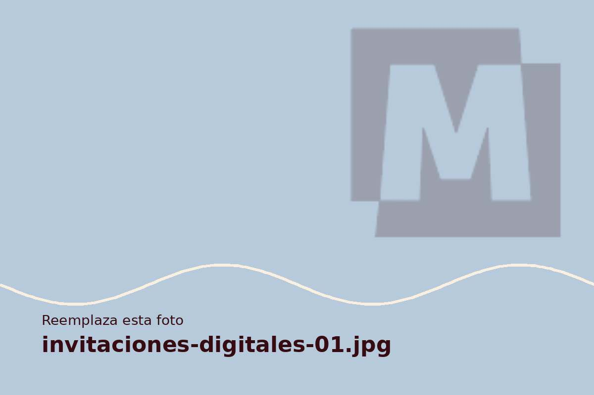
Invitaciones digitales
Invitaciones listas para compartir por WhatsApp.
Conocer servicio →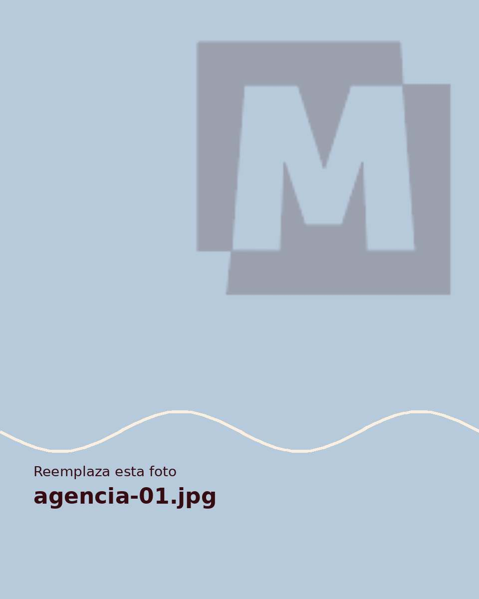
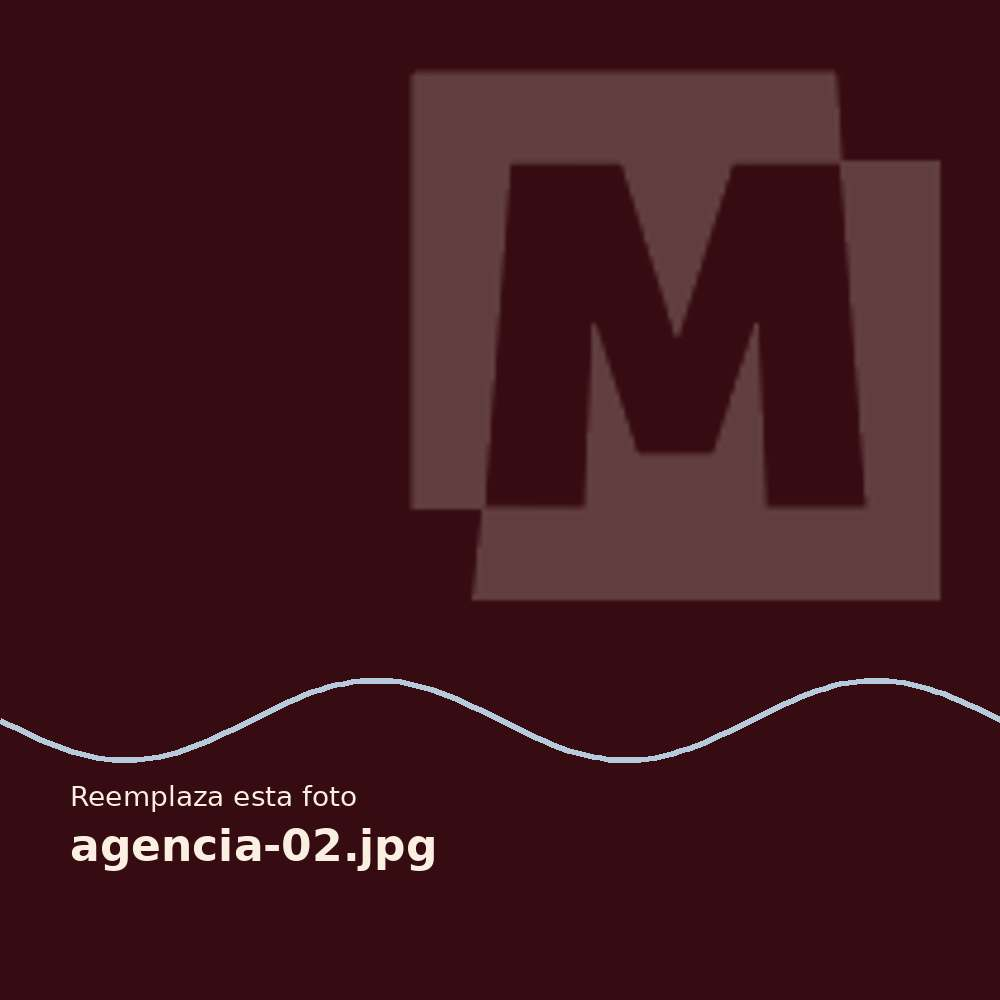
Quiénes somos
Un estudio, todas las piezas de tu marca
MARGEN reúne diseño gráfico, fotografía, audiovisual, marketing digital y web para que tu marca hable con una sola voz, en todos los lugares donde aparece.
Qué hacemos
Creamos marcas, imágenes, videos, contenido y sitios web que se ven bien y cumplen un objetivo.
Nuestra filosofía
La buena creatividad es clara: una idea bien pensada, bien ejecutada y fácil de recordar.
Un solo equipo
No tienes que coordinar cinco proveedores. Todo se piensa en conjunto desde el primer día.
Precios claros
Paquetes en RD$ con entregables, tiempos y revisiones a la vista antes de empezar.
Proyectos destacados
Ideas hechas imagen
Ejemplos conceptuales que muestran nuestro estilo. Aún no mostramos trabajos de clientes: esta sección se actualizará con proyectos reales.
Proceso creativo
Cinco etapas, cero sorpresas
- 01
Descubrimiento
Escuchamos tu negocio, tu público y lo que quieres lograr.
- 02
Estrategia
Definimos el enfoque, los mensajes y las prioridades.
- 03
Conceptualización
Convertimos la estrategia en ideas y direcciones visuales.
- 04
Creación
Diseñamos, fotografiamos, grabamos o desarrollamos.
- 05
Entrega
Revisamos contigo y te entregamos todo listo para usar.
Tu próxima gran idea comienza aquí.
Cuéntanos qué necesitas y te responderemos con una propuesta clara.
Hablemos de tu proyecto →